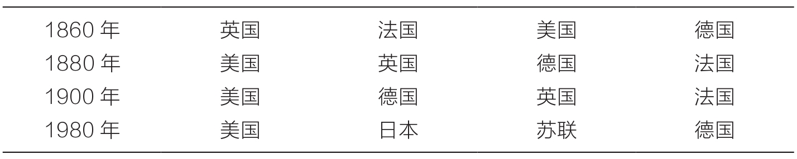
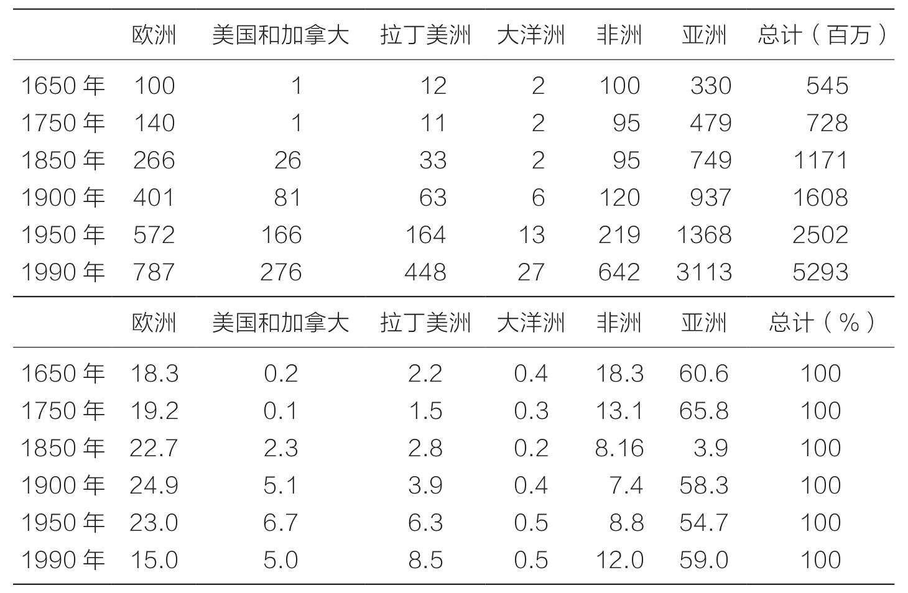
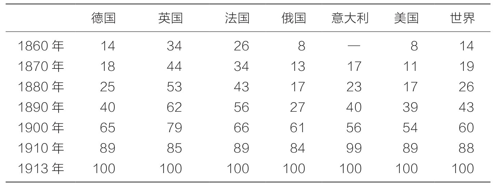
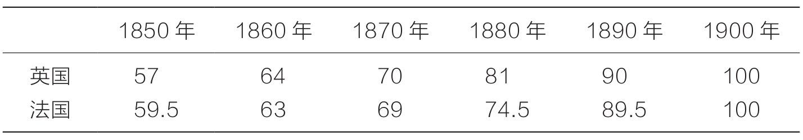
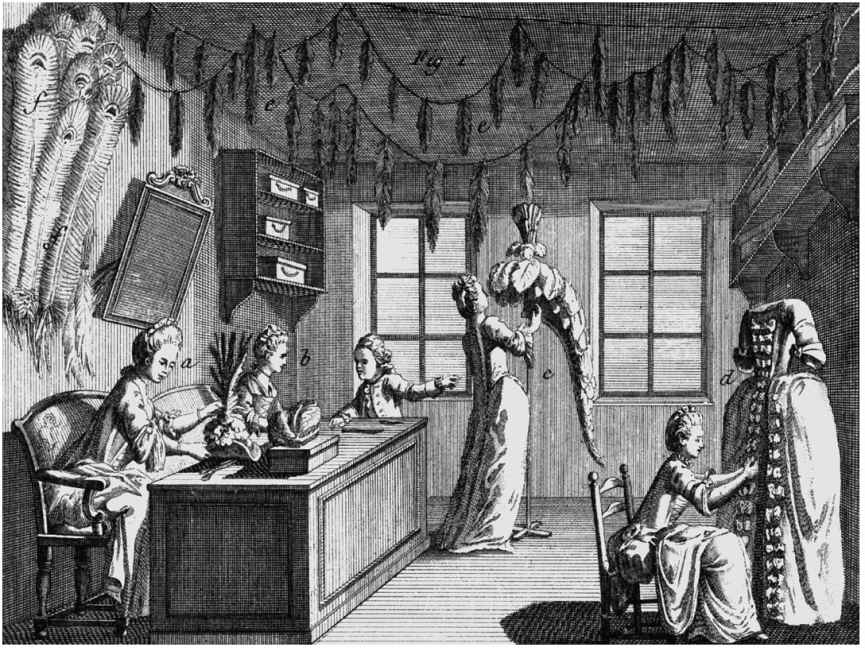
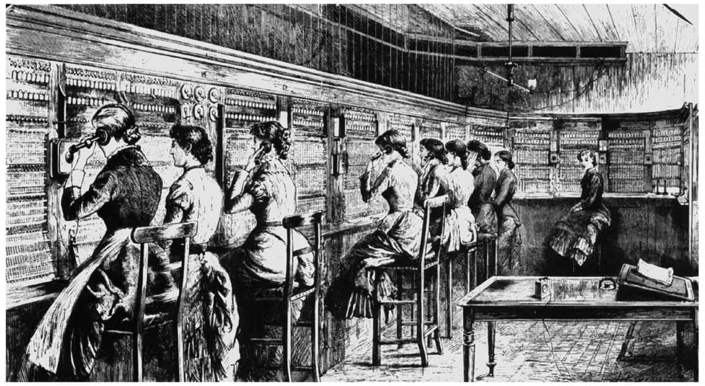

工业革命的传播
在19世纪期间，工业革命从英国逐渐传播到欧洲大陆。传播的方式取决于很多因素，例如自然资源的供应和不受行会限制或封建义务妨碍的自由流动的劳动力。比利时是第一个开始工业化的国家，因此，到1870年时，大多数人都居住在城市，并直接依靠工业或贸易过活。继比利时之后是法国、德国、奥匈帝国、意大利和俄国。与此同时，非欧洲国家也正在进行工业化——起初是美国，随后是英国自治领和日本。后来者可以享受到新的、更有效的工厂的好处，因此，英国失去了其最初的“世界工厂”的地位。
表26.1列举的各强国是按照它们在工业生产方面的次序排列的，它表明了在世界工业均势方面所发生的变化。
表26.1 世界工业平衡变化（1860—1980年）

20世纪90年代，世界经济的平衡始终在发生着变化。1995年，世界经济增长了3.7%，但大多数增长都是在欧洲以外实现的。1995年，美国和欧洲的经济增长率在2.6%和3.0%之间，而亚洲则达到了8.7%。1995年，亚洲各国的增长率为：中国10.2%，韩国9.7%，越南9%，印尼7.5%。[6]
人口的增长
工业革命对欧洲的另一影响是人口的进一步增长；随着农业生产率的提高，人口增长早已开始。尽管19世纪期间有数百万欧洲人移居海外，1914年时欧洲大陆的人口却是1750年时的3倍以上。这一人口爆炸的原因首先是经济上的，其次是医学上的。在此前的数世纪中，大多数死亡的人都是因传染病所致，而传染病的传播主要取决于生活水平。随着19世纪马铃薯种植的增加，人们的营养水平提高，对疾病的自然抵抗力也相应增强，死亡率相应下降。俄国以西的欧洲大部分地区的饥荒已成为过去的回忆。即使农作物歉收，新的铁路网也能保证来自外界的充足供应。与此同时，工业革命还改进了污水处理系统，饮用水供应更安全，这也进一步降低了死亡率。因此，死亡率统计数字显示，在主要的化学药品发明前约30年，因主要传染病致死的死亡率已开始下降。
当时，新医药科学的应用，如接种疫苗和对传染病人的隔离，使西欧的死亡率进一步下降。到1914年，它们已从1800年的至少30‰降低到15‰左右。为此，欧洲的人口也就从1750年的1.4亿迅速上升到1800年的1.88亿、1850年的2.66亿、1900年的4.01亿和1914年的4.63亿。欧洲的这一增长率比世界其他地区的增长率要高得多，以致它改变了全球人口的平衡（见表26.2）。
表26.2 1650—1990年的世界人口变化*

* 这些数字表明，欧洲占世界总人口的百分比从1650年的18.3%上升到1900年的24.9%，又回到1977年的18%。但是，到20世纪，美国、加拿大和大洋洲的大部分居民的祖先都是欧洲人，拉丁美洲至少有一半居民的祖先也是欧洲人。因此，如果说整个20世纪，欧洲人和具有欧洲血统的人的百分比已上升到占世界总人口的三分之一左右，那更富有意义。
Adapted from A. M. Carr-Saunders，World Population（Clarendon，1936）, p. 42，and United Nations Demographic Yearbooks.
城市化
工业革命还引起世界社会前所未有的城市化。以往城市的规模取决于周围地区所能生产的粮食的数量。因而，人口最稠密的城市都分布于流域地区和涝原，如尼罗河流域、新月沃地、印度河流域和黄河流域。随着工业革命的发展和工厂体系的建立，大批的人涌入新的工业中心。巨大的新的城市人口因为能从世界各地获得粮食而得到供养。技术和医学上的进步有可能消除以前曾大批害死城市居民的瘟疫，甚至有可能使城市生活变得较可忍受、较合意。这些进步中较重要的包括：充分供应洁净的水、改善集中式排水系统和垃圾处理系统、保证充足的粮食供应，以及预防和控制传染病。因而，世界各地的城市以极快的速度发展，到1930年，城市人口已达4.15亿，占人类总人口的五分之一。这是人类历史上一个巨大的社会变化，因为在城市居住意味着一种全新的生活方式。西方的许多国家如英国、比利时、德国和美国，到1914年时，已使它们的绝大多数人口生活在城市里。
财富的增长
工业革命以世界性的规模有效地利用了人力资源和自然资源，使生产率得到了史无前例的提高。英国首先受到这方面的影响，使其资本从1750年的5亿英镑增长到1800年的15亿英镑、1833年的25亿英镑和1865年的60亿英镑。在19世纪后半个世纪中，整个世界都受到了不断增长的生产率的影响。新西兰的羊毛、加拿大的小麦、缅甸的稻米、马来西亚的橡胶、孟加拉的黄麻以及西欧和美国东部兴旺的工厂——所有这些资源都卷入了生气勃勃的、不断扩张的全球经济之中。表26.3中的数字表明了19世纪后半叶中工业生产在欧洲和全世界发展的速度。
表26.3 工业生产的上升（1913年=100）*

* F. Sternberg, Capitalism and Socialism on Trial（Day，1951）, p. 21. Translated by Edward Fitzgerald. Copyright 1950 by Fritz Sternberg. Copyright renewed. Reprinted by permission of HarperCollins Publishers，Inc.
近年来，关于工业革命期间所产生的财富的分配问题，权威们的看法大相径庭。一部分人相信，所有的阶级都在大小不等的程度上获益；其他人则坚持认为，少数人获得了巨大的财富，而多数人却在遭受无情的剥削，其生活水平不断下降。
无疑，在工业化的早期阶段，存在着大量的剥削和社会分裂。佃农被逐出家园，织布工和其他手工业者由于新的机制商品的不可抵抗的竞争而被淘汰。这些人同别的和他们一样的人一起，面临着迁居城市、寻找工作、适应不熟悉的环境及陌生的生活方式和工作方式的严峻考验。他们没有土地、房屋、工具和资本，完全依靠他们的雇主。总之，他们成为纯粹的雇佣劳动者，除了自己的劳动力外一无所有。
当他们找到工作时，他们发现工作时间很长，16小时工作日绝不是罕见的。当工人们最后争取到分两班轮换的12小时工作制时，他们将这一改变看作一件幸事。如果仅仅是工作时间长，原本可以忍受，因为他们的工作时间并不比实行家庭包工制时在家里工作的时间更长。但是，在变得习惯于工厂的纪律和管理机器的单调方面，遇到了真正的困苦。工人们随着工厂的汽笛声而上下班。他们必须跟上机器的运转，并始终处于在场监工的严格监督下。工作是单调乏味的——拉控制杆、刷去污物、接上断线。雇主自然把他们的工资账单看作一笔应尽可能降低的开支。因而，他们中的许多人，尤其是纺织工业的雇主们，更喜欢雇妇女和童工，因为妇女和童工愿意接受较低的工资，而且更服从命令。对妇女和童工劳动的剥削达到了很大的规模，以致议会的许多委员会在进行调查时发现了种种令人震惊的情况。
不过，工业革命对工人阶级的影响这一问题还有着另一方面。首先，议会的一些委员会仅仅调查了如采矿和纺织之类的行业，那些行业的情况是最糟的。证人们向委员会所提供的令人震惊的证言的确是以事实为根据，但是，那些事实并不适用于整个英国工业。而且，对于19世纪初叶工人们的处境，必须从当时而不是现在的标准来看。实情是，这些工人原来生活的村庄在许多方面同城市一样肮脏。在典型农村居住区，稻草褥子里老鼠和虱子成群出没，风呼啸着吹过薄薄的茅草屋顶和破烂的灰泥墙。乡下散工的报酬非常低，以致他们不断地涌入新的工业城市。成千上万的爱尔兰人也渡海到新工厂做工。此外，在工业革命的这些较早的日子里，英国人口剧增——这一事实与通常所设想的那种艰难困苦的图景是不一致的。完全有可能，这些早期工厂的多数工人比其祖先享有较高的实际收入。
虽然我们不能肯定工业革命在18世纪后期和19世纪初叶对工人阶级生活水平的影响，但我们完全确信，在19世纪后半叶中，生活水平大大提高。生产率的大幅增长和巨大的海外投资所带来的利润一起，逐渐地使西欧的下层阶级也得到了利益。在“饥饿的四十年代”中，失业造成了大量的苦难，但那时以后，西欧的工人享受着普遍的繁荣和不断提高的生活水平，直到第一次世界大战以前。表26.4中的数字表明，在1850年至1913年间，英国和法国的实际工资几乎增加了1倍。
表26.4 实际工资的增长（1850—1913年）（1913年=100）*

* F. Sternberg, Capitalism and Socialism on Trial（Day, 1951）, p. 27. Translated by Edward Fitzgerald. Copyright 1950 by Fritz Sternberg. Copyright renewed. Reprinted by permission of HarperCollins Publishers, Inc.
新消费主义
处于社会顶层的少数人和底层的多数人的收入的增长，使得消费社会第一次在人类历史上在英国出现成为可能。消费的欲望并非特殊之事，莎士比亚在《无事生非》中曾经提到：流行的衣服永远比人们能穿破的衣服要多（“fashion wears out more apparel than the man.”）。因此，18世纪的英国所独有的不是消费的欲望，而是大多数人消费的能力。在此前的人类社会中，大众的收入太微薄，以致一半到四分之三的收入必须用来购买食物。剩余的极少的钱还得购买其他必需品，因此，根本不剩钱去买一时兴起想买的东西或时装。这既可以解释为什么当时的时装并不像现在这样随着季节的变化而变化，也可以解释为什么日本的和服、印度的腰布、一些伊斯兰国家的宽松裤、拉美的披肩几个世纪以来都一成不变。

图184 18世纪，各种消费品的消费大大增加。这幅雕版画描绘的是一个可能位于巴黎的商店。画中的妇女显然是在为一个女经理干活，在制作衣服和帽子，以满足时装贸易的需要。
18世纪的英国是第一个打破这一传统模式的国家。这要归功于由于圈地运动后的农业革命、海外事业引起的利润的大量涌入和工业革命导致的生产率大幅度提高而来的国民收入的增加。国民收入增长的一部分流向了大众，因此，国内市场发展起来了；这种市场比过去仅有上层少数人才有购买力时的市场要大得多。
商人们迅速改进经营手段来迎合新的、利润丰厚的国内市场。早在18世纪，他们就在运用一系列今天还在用的现代销售技巧，包括市场调查、信贷、折扣计划、传单、目录、报纸和杂志广告和不满意退款的销售承诺等。这种大众营销的先驱是陶工乔萨·韦奇伍德，他坦诚地说：“时尚优于美德。”为此，他制订了销售战略，使他的陶瓷成为全世界最知名、最受欢迎的陶瓷，即使它们常常既不是最好，也不是最便宜的。
一位研究这一新消费主义的学者断定：“新消费主义使得各阶层开始购买它们从前从未有机会购买的，甚至比以前更大范围的商品……社会模仿的巧妙使用使本来只买‘体面商品’的人购买‘奢侈品’，使本来只买‘必需品’的人购买‘体面商品’……事实上，时尚及其利用者提高了人们‘金钱准则’的水平。”[7]大众消费主义正是以这种方式出现在18世纪的英国的，它已变成全球20世纪的社会标志。
妇女的新角色
工业革命不仅引起了新消费主义，而且赋予了妇女新的角色。这场革命对妇女的影响正如几百万年前农业革命对她们的影响一样深远。总的影响是迫使妇女走出过去她们以此为生的家庭经济，进入新的、家庭以外的工薪经济。
前工业化时代的家庭经济是建立在家庭基础上的；在家里，妻子、丈夫，甚至很小的孩子们都一起工作。这使人联想到愉悦、健康的家庭生活，但事实远非如此。妇女从事了大量的单调、重复的劳动，如纺线、织布、竖织布机等。她们的工作经常是对丈夫或父亲的工作的辅助或准备工作，因此，她们通常要同男人们一起长时间地工作。而且，除兼做这一劳动外，妇女还得做其他繁重的工作，如做家务和照顾孩子。
随着工业革命的发展，主要的工作场所从家庭转移到了工厂和车间，女工作为工薪一族成为金钱经济的一部分。这有一些优势，比如工作更稳定，因为工业家向工厂和机器投入大量的资金，因此停产的可能极小。除了以年为单位雇用的工人的年收入较高外，在工厂工作的妇女的工资也比其以前在家做计件工作的收入要高得多。例如，在1914年，在曼彻斯特棉纺织厂，已婚妇女每周所挣的钱比她们在家里绣手帕所挣的钱要高一倍。
另一方面，新工厂里的工作也有一些男性和女性工人都不喜欢的消极因素。如上所述，这些因素包括工作时间过长，工作环境不健康，规章制度和惩罚措施太多等。妇女尤其易受到虐待和剥削，因为她们往往比较温顺，不太喜欢组成工会。工会的男性领导人很少鼓励、更多的是阻挠女性加入工会。妇女通常也没有参加工会所需要的时间和金钱。因此，在19世纪末，妇女的平均工资还不到男人工资的一半。
大多数女工在婚后和产后都放弃了她们在工厂里的工作。但是，丈夫的收入通常不够整个家庭的开销，因此，这些母亲会尽可能多地在家里做活。这种临时性的工作包括收留寄宿生、缝纫、做假花、洗衣、照顾职业女性的孩子等。
在19世纪后期，由于西欧婴儿死亡率的急剧下降，中产阶级女性的地位发生了变化。婴儿的出生率相应下降，为此解除了妻子们无休止的怀孕负担的痛苦。这时，省力的新式家电出现了，它还可以减轻家务的负担。从理论上讲，这些情况结合在一起，应该能大大减轻家庭主妇的责任和工作负担。但实际上，结果完全不同。省力的家用设备并没有像预想的那样减轻家庭主妇的负担，因为廉价的用人越来越少。因此，母亲们发现，使用新的洗衣机和电熨斗反而比过去使用洗衣女工更累。

图185 正在电话交换机前工作的妇女。电话的发明为妇女开辟了新的就业机会。
同样重要的是，人们日益增长的期望：中产阶级女性的主要责任不再是做家务，而是做母亲。书籍杂志和宗教教义都在宣传这样一种观念：母亲不仅应关心全家人的身体健康，还应关心他们的心理健康。专家们为成功的现代母亲介绍了新的“科学”技巧。与此同时，人们也期待着母亲们能够保留传统的美德和保持女性的特点。难怪许多中产阶级女性会对此感到焦虑和不满。一些人开始质疑婚姻要求她们顺从丈夫和孩子的提法，结果出现了女权主义运动，妇女要求平等权利，要求得到更多机会，无论是在家内，还是在家外。
与此同时，工人阶级女性却没有时间、金钱和精力去为中产阶级妇女关于家务与母亲角色的事情而烦恼。在现实生活中，她们无法渴望成为一个完美的妻子、完美的母亲和完美的管家。而且，她们还得处理眼下突如其来的日常危机——失业、遭遗弃、疾病和长期存在的工资收入和家庭支出之间的差距。对这些处境困难的工人阶级女性——她们始终占女性的大多数——来说，生活归结为一场确保家庭能应付日常开销的无休止的斗争。